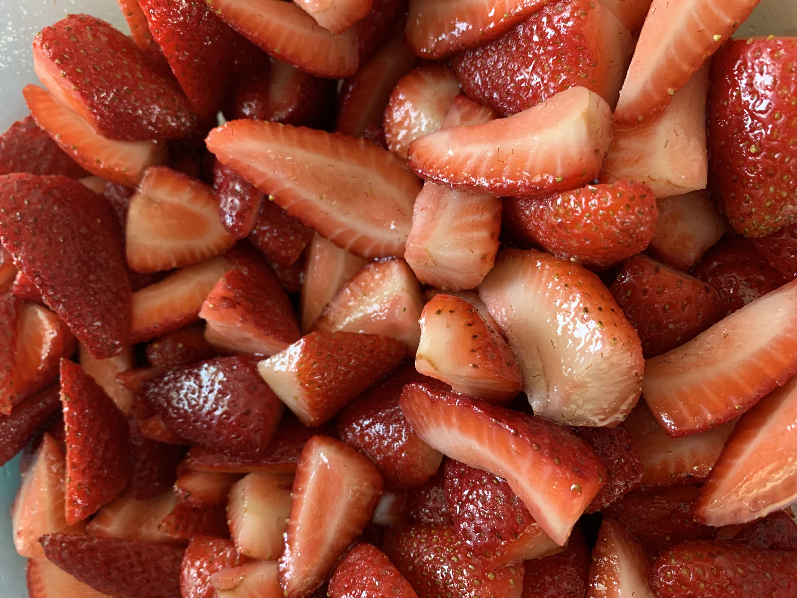

Strawberry Sauce

Description
This simple tasty
strawberry sauce requires no cooking and is great for summer!
Ingredients
- 2 quarts fresh strawberries, cleaned, hulled and sliced
- ½ cup white sugar
Steps
-
Place the strawberries in a large bowl. Sprinkle the sugar evenly
over the berries, and stir to evenly coat all of the fruit.
-
Let stand at room temperature for 10 minutes, stirring
occasionally. Cover and chill until ready to serve.